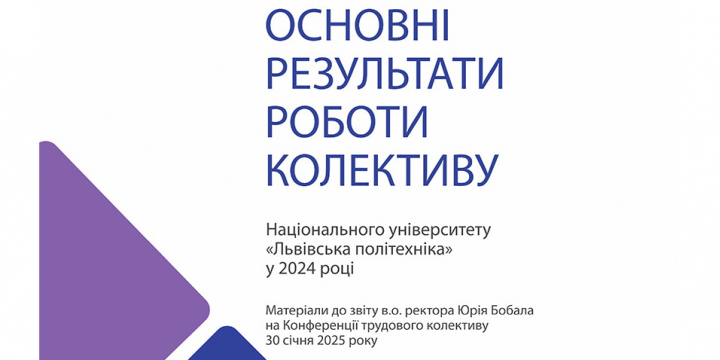
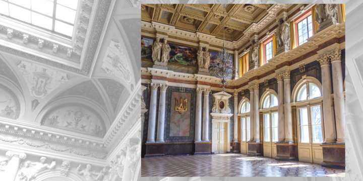

Інститути – досягнення, плани, мотивація: тематичний номер журналу «Львівська політехніка»

Звіт в.о. ректора Львівської політехніки Юрія Бобала на Конференції трудового колективу 30 січня 2025 року

Політехніка екскурсійна
Львівська політехніка у рейтингах закладів вищої освіти